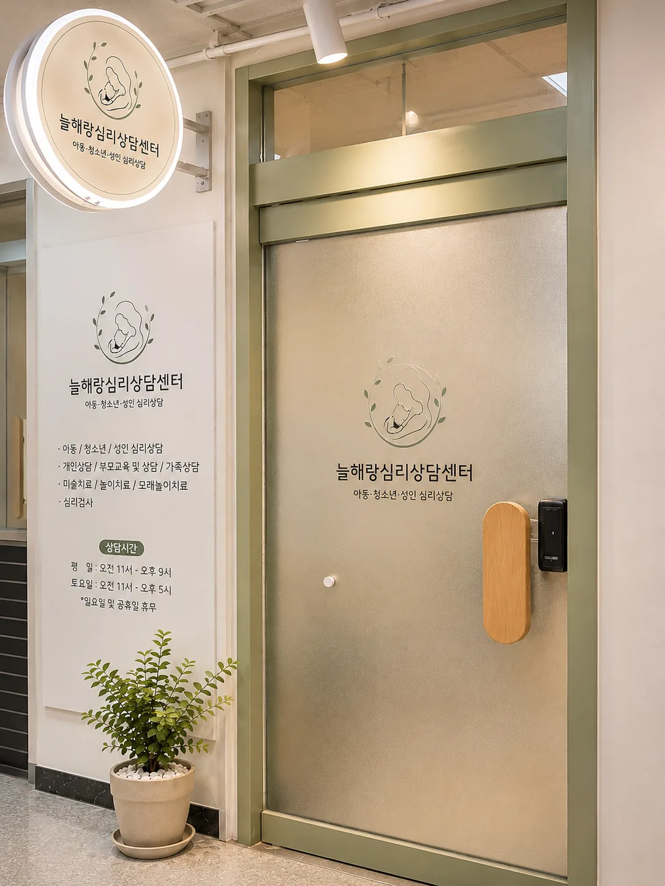

상계역
5번 출구
도보 3분
놀이치료
아이의 마음을 놀이로 이해하고 성장을 돕습니다.
미술치료
그림과 색으로 마음을 표현하고 살펴봅니다.
모래놀이치료
말로 하기 어려운 마음을 모래와 소품으로 탐색합니다.
부부 · 성인 상담
관계의 어려움과 마음의 고민을 함께 풀어 갑니다.
- 15년 이상상담 경력
- TCI 성격검사전문 활용
- EAP 협약공식 상담센터
- 토요일상담 운영


정답을 드리기보다,
각자의 속도로 회복하도록
누군가를 바꾸거나 고치기보다, 이미 가지고 있는 힘을 다시 발견하실 수 있도록 곁에서 함께합니다.
처음부터 끝까지 한 선생님
초기 상담부터 마지막 회기까지 담당 선생님이 직접 진행하며, 마음의 변화를 꾸준히 살펴봅니다.
한 사람에 맞춘 상담
정해진 프로그램을 똑같이 적용하지 않고, 발달 수준과 어려움, 상담 목적에 맞춰 방법을 고릅니다.
독립된 조용한 공간
편안하고 안전한 공간에서 자신의 감정과 생각을 자유롭게 표현하실 수 있습니다.
예약제 · 비밀보장
모든 상담은 사전 예약으로만 진행하며, 상담 내용의 비밀보장을 중요하게 생각합니다.

“상담은 정해진 해답을 드리는 과정이 아니라, 자신의 내면을 이해하고 회복의 힘을 찾아가는 과정이라고 생각합니다.”
문은정늘해랑심리상담센터 센터장
- 학력명지대 일반대학원 아동가족심리치료 박사수료
- 학력명지대 사회교육대학원 표현예술심리치료 전공 석사
- 경력세화정신의학원 낮병동 · 원자력병원 어린이병원학교 미술치료
- 경력온정심리상담소 소장 · 초등학교 모래놀이치료
- 학회한국상담심리학회 · 한국표현예술심리상담학회 · 한국모래놀이치료학회 정회원
- 자격놀이심리상담사 · 미술심리상담사 · 모래놀이치료사 · 부모교육지도사
- 수석상담사정연옥
임상심리사 · 청소년상담사 · 놀이심리상담사 1급
 인지행동놀이 · 학습치료손옥희
인지행동놀이 · 학습치료손옥희임상심리사 1급 · 한국인지행동치료학회 정회원
- 자문위원이선욱
표현예술심리치료 전문가 · 정기 자문 및 사례 슈퍼비전
조용하고 편안한 공간에서
천천히 마음을 들여다보세요





상담은 이렇게 진행됩니다
빠른 해결이나 정답을 제시하기보다, 한 분 한 분의 상황과 속도에 맞춰 진행합니다.
상담 예약
네이버 예약이나 문자로 원하시는 요일 · 시간을 알려 주세요. 상담 중에는 통화가 어려워 문자를 남겨 주시면 차례로 연락드립니다.
초기 상담
지금 겪고 있는 어려움과 마음 상태를 함께 이야기하고, 상담이 어떤 방향으로 진행되면 좋을지 정리합니다.
상담 진행
목표와 필요에 맞춰 상담을 이어 갑니다. 아동 · 청소년 상담은 부모 상담을 함께 진행합니다.
상담 종결
목표가 충분히 정리되었다고 느껴질 때, 종결 시점과 이후의 방향을 충분히 상의해 결정합니다.
상담 비용
- 아동 상담 (1회 50분)
- 60,000원
- TCI 기질 · 성격검사 + 해석 상담
- 39,000원
- 성인 · 부부 상담
- 문의
지역화폐 · 제로페이 · 간편결제를 쓰실 수 있습니다. 자세한 비용은 예약 때 안내해 드립니다.
상담비 지원제도
비용 때문에 상담을 망설이지 않으시도록 센터가 직접 지원합니다.
- 수급 · 차상위 · 한부모 · 조손가정30%
- 기준 중위소득 120% 이하 가정20%
정부 · 지자체 바우처가 아닌 센터 자체 제도이며, 간단한 증빙자료 확인 뒤 안내해 드립니다.
상계역 5번 출구에서
횡단보도만 건너면 됩니다
- 주소
- 서울 노원구 한글비석로 396벽산종합상가 108동 2층 7호
- 지하철
- 4호선 상계역 5번 출구 도보 3분
- 주차
- 벽산종합상가 지하 주차장 무료벽산아파트 정문 → 108동 쪽 직진 → 왼쪽 지하 주차장
- 상담 시간
- 월 – 금10:00 – 22:00토요일10:00 – 19:00일요일둘째 · 넷째 주 상담
- 문의
- 010-6793-4899상담 중에는 문자를 남겨 주세요.
“마음이 편안해지는 상담,
늘해랑에서 시작하세요.”